曜日・時間: 水曜日 10:00�E�E(40刁E
対象: 0歳�E�E歳
曜日: 火曜日�E���曜日
時間: 15:00�E�E(45刁E
対象: 3歳�E�年長
曜日: 月�E火・水・木・釁E/p>
時間: 10:00�E�E4:00
対象: 2歳�E�年封E/p>
�E��E庫県�E認可外保育施設として認定されてぁE��す。幼児教育・保育の無償化の対象になります、E/p>
�E�人数が少なぁE��合�E火・水・金�E週3回で開講されます、E/p>
プリスクール+アフタースクールの併用も可能です♪
(朁E・(木)10�E�E0�E�E4�E�E0+(火)(水)(釁E10�E�E0�E�E7�E�E5�E�２歳�E�年少！E/p>
曜日: 火・水・木・釁E/p>
時間: 15:00�E�E7:45
対象: 年少～年長
曜日: 土曜日
時間: 9:00�E�E2:00
クラス: 3歳�E�E��少クラス・年中クラス・年長クラス
3歳�E�E��少クラスと年中クラスは9時ａE1時まで合同です、E/p>
11時ａE2時�E2つのクラスに別れて教科書ベ�Eスのコミュニケーションクラスを行います、E/p>
年中クラスまではキチE��ビル、年長クラスはオフィスビルで行われます、E/p>
①オムチE�E交換�E承りますが、トイレトレーニング期間でのトレーニングパンチE���E着用はご遠慮頂き、トイレトレーニングが完�Eに終亁E��るまではスクール来校の際�EオムチE�E着用をお願いぁE��します、E/p>
②お子様�E成長と活動�E記録としてお楽しみ頂くため、レチE��ンの様子を写真などでお送りすることがあります。その際�E真に別の生徒様が映り込む場合や、E��E��別の生徒様�E写真にお子様が映ることがございます。予めご亁E��頂き、�E真�E取り扱ぁE��は十�Eにご�E慮くださいますよぁE��願いぁE��します、E
曜日: 火曜日�E���曜日
時間: 14:30�E�E9:00
対象: 小学1年生～小学6年甁E/p>
CLILとぁE��教授法を使ぁE��す。英語を学ぶのではなく英語を使って色、E��教科を学びます。この教授法では関係する英単語だけではなく物事を老E��、英語で表現する力を楽しみながらつけられます、E/p>
※こちら�Eクラスはガクドウ冁E�Eクラスですが単体でご受講も可能です、E/p>
※ガクドウコースのスケジュールに合わせて開講されます�Eで祝日は休みです、E/p>
�E�コミュニケーションAAS4修亁E��みレベル
※こちら�Eクラスはガクドウ冁E�Eクラスですが単体でご受講も可能です、E/p>
※ガクドウコースのスケジュールに合わせて開講されます�Eで祝日は休みです、E/p>
曜日: 火曜日�E�土曜日
時間: 45刁E/p>
対象: 小学3年生ａE年生でAPA3+4修亁E��ベルかつ英単語が読める方
※英検®は、�E益財団法人 日本英語検定協会�E登録啁E��です。このコンチE��チE�E、�E益財団法人 日本英語検定協会�E承認や推奨、その他�E検討を受けたものではありません、E/p>
※こちら�Eクラスはガクドウ冁E�Eクラスですが単体でご受講も可能です、E/p>
※ガクドウコースのスケジュールに合わせて開講されます�Eで祝日は休みです、E/p>
※2年生以下で受講をご希望の方は、お知らせください、E/p>
※英検®は、�E益財団法人 日本英語検定協会�E登録啁E��です。このコンチE��チE�E、�E益財団法人 日本英語検定協会�E承認や推奨、その他�E検討を受けたものではありません、E/p>
※英検クラスはガクドウ冁E�Eクラスですが単体でご受講も可能です、E/p>
※ガクドウコースのスケジュールに合わせて開講されます�Eで祝日は休みです、E/p>
曜日: 火曜日�E�土曜日
時間: 45刁E/p>
対象: 小学1年生～小学6年甁E/p>
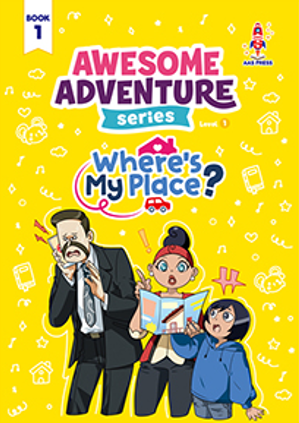
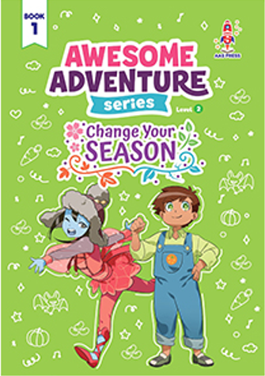
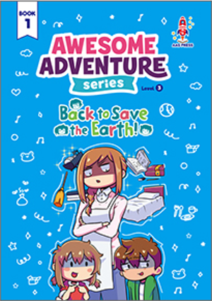
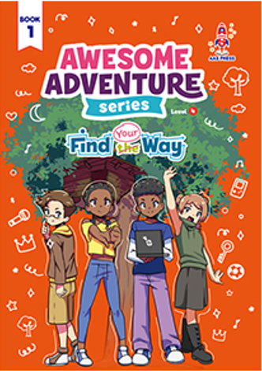
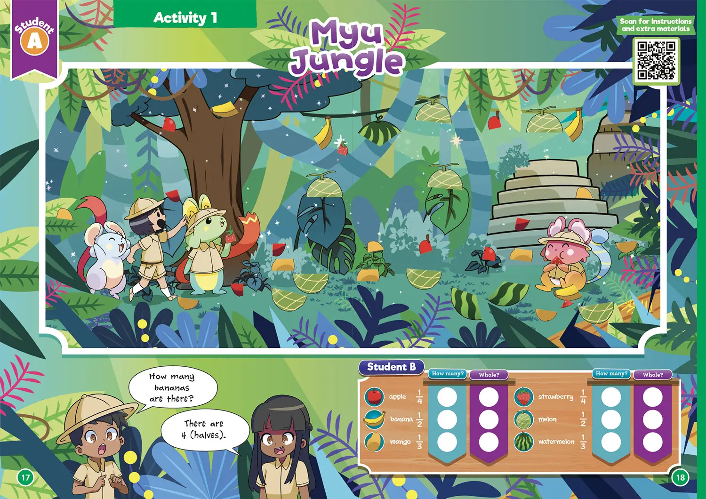
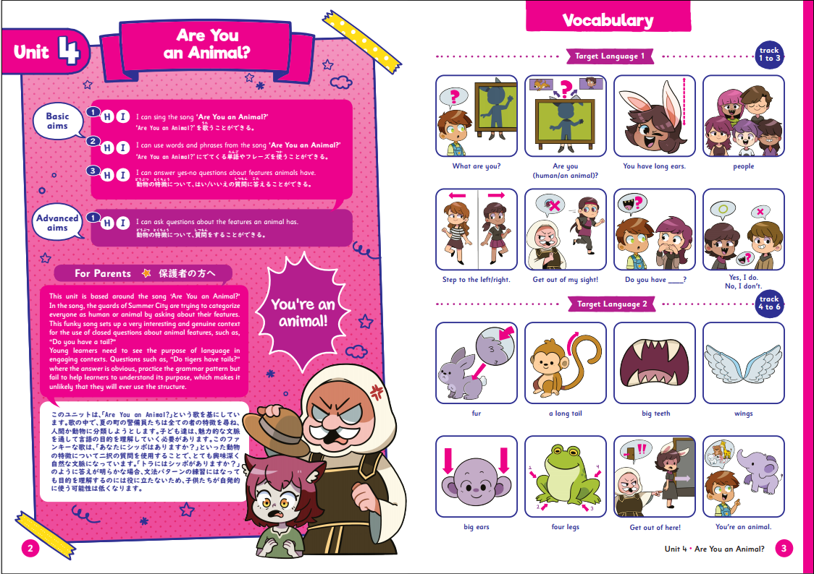
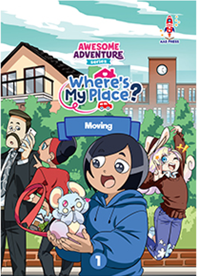
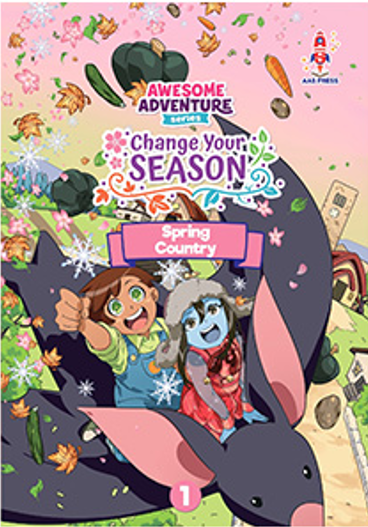
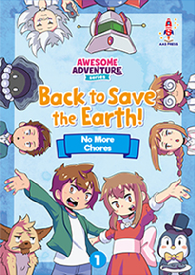
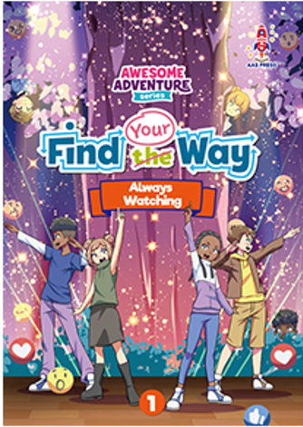
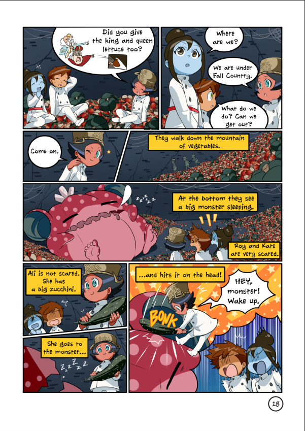
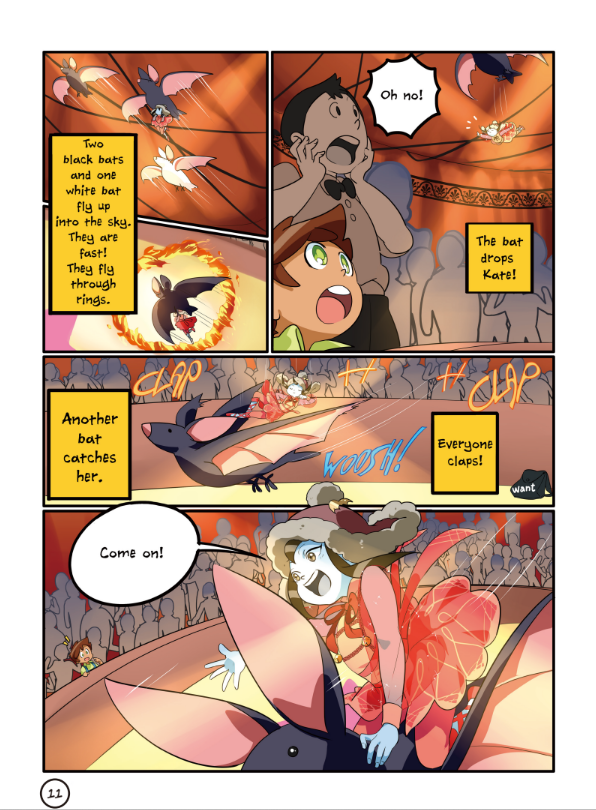
曜日: 火曜日�E�土曜日
時間: 45刁E/p>
対象: 年長�E�小学校6年甁E/p>
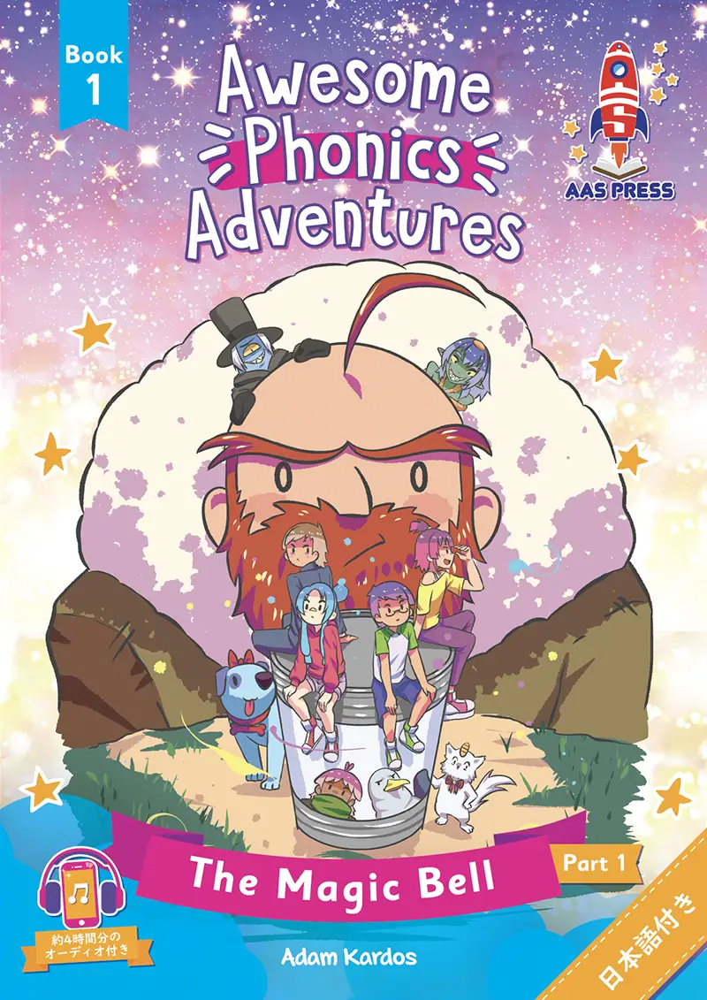
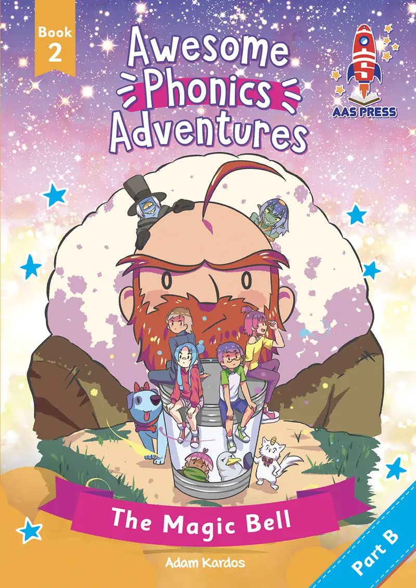
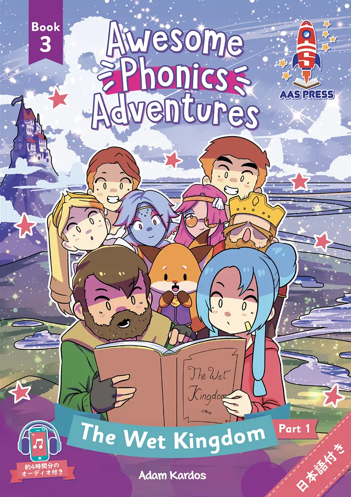
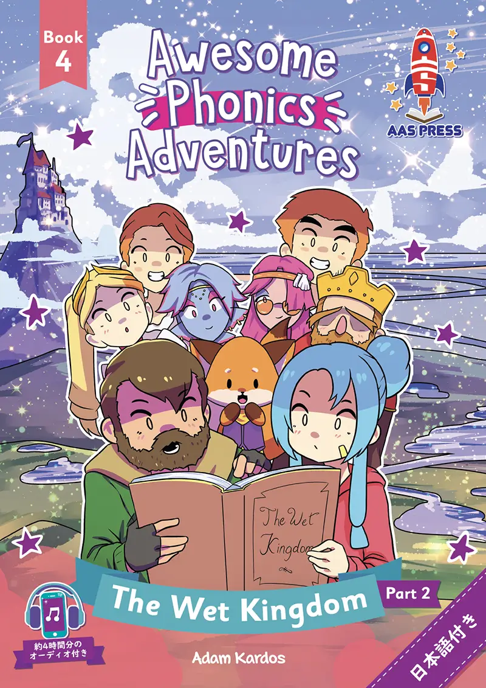


曜日: 火曜日�E�土曜日
時間: 45刁E/p>
対象: 小学4年生～小学校6年甁E/p>
曜日: 土曜日
時間:
9:00�E�E2:00 (小学生低学年クラス)
14:00�E�E7:00 (小学生クラス + インターナショナルクラス)
対象: 小学1年生～小学6年甁E/p>
【コミュニケーションクラス・外国人講師、E/strong>
【学校斁E��クラス・日本人講師、E/strong>